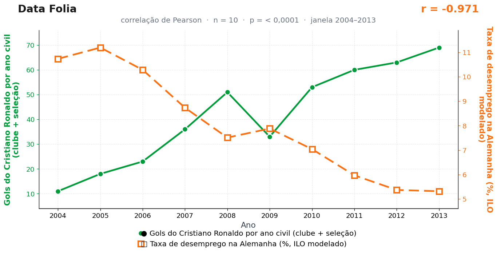

Post de 13/07/2026
A teoria
A Alemanha planeja trem, fábrica, ata, parafuso e pausa do café. Dentro desse método, o gol de Cristiano Ronaldo entra como gatilho externo de eficiência.
Quando o atacante português acerta a rede, o sistema entende a mensagem. Uma fábrica reorganiza turnos, uma empresa antecipa vaga e um profissional de recursos humanos abre a planilha com pontualidade renovada.
Cristiano não marca apenas gols; ele destrava vaga parada. A comemoração vira comunicado europeu, a bola cruzando a linha vira autorização de contratação, e a burocracia alemã transforma potência esportiva em contrato.
Berlim nunca confirmou o protocolo. Mas também nunca o negou com a veemência que o assunto exige — e, no vácuo institucional, o Data Folia trabalha.
Consta que o formulário de contratação alemão tem um campo opcional chamado "finalização de fora da área". Não conseguimos confirmar. Não conseguimos desconfirmar.
A teoria é ficção; a correlação é real: r = −0,97 (n = 10, p < 0,001).
Os dados por trás

- Gols do Cristiano Ronaldo por ano civil (clube + seleção) — 10 pontos anuais, período 2004–2013. Fonte: RSSSF / IFFHS / Transfermarkt.
- Taxa de desemprego na Alemanha (%, ILO modelado) — 10 pontos anuais, período 2004–2013. Fonte: World Bank — ILO modelled estimate.
Como as correlações deste site são encontradas — e por que você não deve confiar nelas — está explicado na nossa metodologia.
Por que isso acontece?
De 2004 a 2013, Cristiano Ronaldo viveu a ascensão da carreira: de 11 para 69 gols por ano civil, uma subida quase contínua. No mesmo período, o desemprego alemão caiu de forma igualmente contínua (de 10,7% para 5,3%), refletindo um ciclo longo de reformas e recuperação do mercado de trabalho local. Duas tendências longas e opostas — uma sobe, outra desce — produzem r = −0,97 por definição geométrica, sem que exista qualquer canal entre elas.
O n = 10 e o p-valor na casa do milionésimo dão a este par uma aparência de solidez acima da média do site. É miragem: o teste de Pearson pressupõe pontos independentes, e séries com tendência forte violam essa hipótese (o valor de cada ano é praticamente o do ano anterior mais um passinho). Correlações entre séries "trending" exigem correção — e, corrigidas, perdem toda a pompa.
A regra prática: antes de se impressionar com r alto entre duas séries temporais, pergunte se cada uma delas, sozinha, já não contava uma história de subida ou descida constante. Se sim, a correlação entre elas é a parte menos informativa do gráfico.
Post de 13/07/2026 · publicado também no Instagram @datafolia.